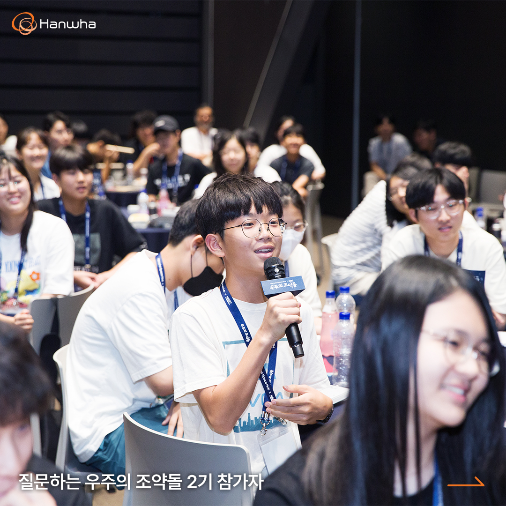
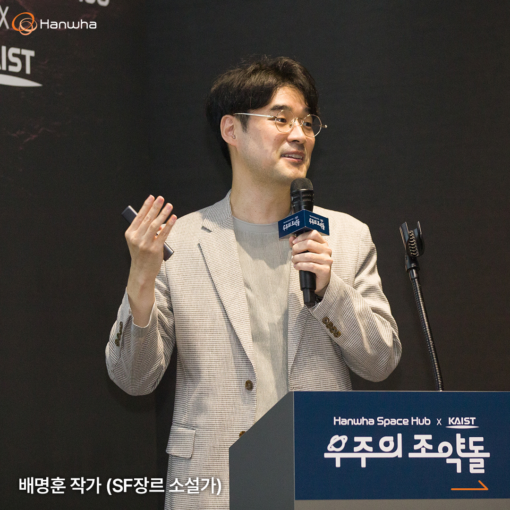
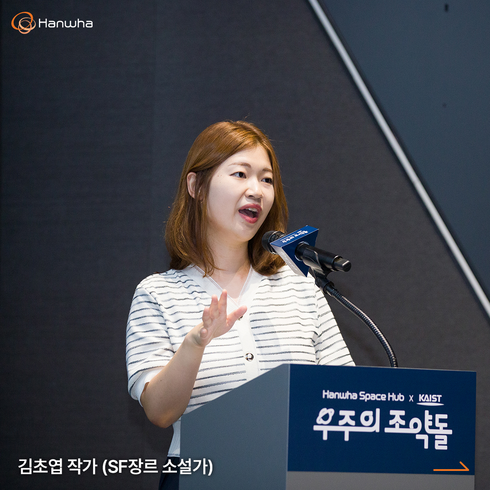
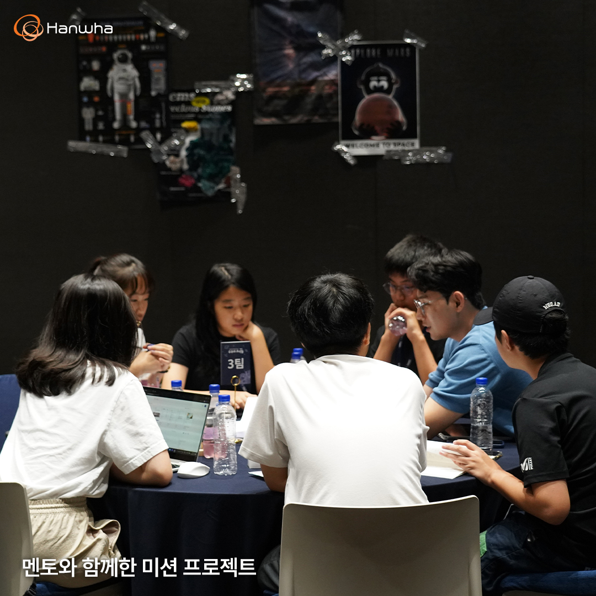

우주의 조약돌 2기, 우주 인문학 2차 컨퍼런스 진행
스페이스 허브가 KAIST와 함께 만든 경험형 우주 교육 프로그램, ‘우주의 조약돌’ 2기 활동의 2차 우주 인문학 컨퍼런스가 8월 12일 토요일, 진행되었습니다.
우리나라를 대표하는 SF 작가! 배명훈 작가와 김초엽 작가의 강의를 통해 “화성에서는 크리스마스가 언제일까” 와 같은 흥미로운 ‘과학적 상상력’에 대해 이야기를 나누어보았고, 과학 커뮤니케이터 궤도님께서 가슴이 벅차 터져 오르는 ‘우리나라의 우주탐사’에 대한 이야기를 해 주셨습니다.
미래 우주 인재로서의 비전을 제시하는 인문학 컨퍼런스데이중학교 1, 2학년을 대상으로 한 우주 영재 육성 프로그램, ‘우주의 조약돌’에서는 과학적 탐구 역량뿐 아니라 창의적 사고와 상상력을 통해 학생들이 새로운 시각으로 우주를 바라볼 수 있도록 토론식 문답 형태의 강연을 진행하고 있습니다. 건축가, 물리학자, 제임스웹 망원경 연구원, 과학 커뮤니케이터, 작가 등 다양한 분야의 전문가들이 참여해 펼치는 우주 인문학 강연을 통해 미래 우주 인재로서의 비전을 제시하고 있습니다.
2차 컨퍼런스데이에서는 우주의 조약돌 명성에 걸맞게 많은 이들에게 우주 과학에 대한 인문학적 영감을 선사하는 SF 작가 ‘배명훈’, ‘김초엽’ 작가와 ‘안될과학’ 유튜브 채널을 운영하는 과학 커뮤니케이터 ‘궤도’가 강연자로서 무대에 올랐습니다.
인문학적 관점을 녹여낸 진정한 우주 연구의 시작먼저 무대에 오른 강연자는 한국의 SF 장르를 선도하고 있는 배명훈 작가였습니다. 배명훈 작가는 ‘인문학적인 화성인’을 주제로, 과학적 관점이 아닌 인문학적 관점에서 우주의 조약돌을 향해 다양한 질문을 던졌습니다.
강연 말미에 등장한 ‘화성에서 인간은 무엇을 먹고살까?’라는 질문은 많은 학생들의 호기심을 자극했습니다. 과학적으로 생각하자면, ‘식량’이 정답이 될 수 있겠지만, 인문학적 관점에서는 ‘음식’이 질문의 답변으로 알맞다고 한 배명훈 작가. ‘먹는다’는 행위를 단순히 열량을 얻기 위한 행동이 아니라, 음식에 녹아 있는 문화와 환경을 경험하는 것이라 했습니다. 화성에 정착한다고 해도 인간사회를 이루며 살아갈 것이기 때문에 진정한 우주 연구를 위해선 인문학적인 관점에서의 고민도 필요함을 알리며 강연을 마무리했습니다.
SF 소설을 통한 과학적 통찰력을 얻는 방법두 번째로 무대에 오른 김초엽 작가는 ‘한국인이 사랑하는 SF 작가’라는 수식어로 불리고 있습니다. 실제 화학과 석사과정을 밟던 김초엽 작가는 과학적 창의력을 기반으로 한 창작 활동을 통해 SF 문학계에 한 획을 긋고 있는데요. 연사로 참가하여 ‘과학적 상상력’을 주제로 강연을 진행했습니다.
비록 소설이 허구라 할지라도 SF 소설을 쓸 때 가장 중요한 것은 ‘실제로 존재할 것 같은 느낌’을 주는 소재를 찾는 일이라 했습니다. 이 때문에 김초엽 작가는 집필 과정에서 이전의 경험과 실험으로부터 미래를 예측하는 ‘외삽법’을 가장 많이 사용한다고 합니다.
외삽법이란, 우리 주위에서 흔히 볼 수 있는 것들이 사라지거나 혹은 비약적인 발전을 이뤄낸 세상을 상상해 보는 것을 말하는데요. 이처럼 일반화를 비틀고 다양성을 인정할 때 과학적 상상력을 가질 수 있다고 김초엽 작가는 더욱 강조했습니다.
우주로 향하는 인류의 꿈, 어디까지 왔나마지막으로 무대에 오른 과학 커뮤니케이터 ‘궤도’는 ‘우리나라의 우주 탐사’를 주제로 강연을 진행했습니다.
이번 강연에서 궤도는 ‘로버트 고다드’ 박사의 우주를 향한 꿈과 그 꿈을 실현했던 열정의 사례를 언급했습니다. 인류 최초로 우주로 가는 꿈을 꾼 로버트 고다드 박사가 1919년 발표한 ‘초고공에 도달하는 방법’ 논문은 당시 엄청난 혹평을 받습니다. 하지만 그는 포기하지 않았고, 결국 로켓을 만들었죠. 이를 시작으로 미국과 러시아의 우주 경쟁이 시작되었습니다. 남들이 비웃을 때도 묵묵히 우주를 향한 꿈을 꾸고, 그 꿈을 실현한 그의 끈기와 열정은 혹평을 남겼던 뉴욕 타임즈마저 정정 보도를 하게끔 만들었습니다.

궤도는 이어서 민간기업에서 시작된 우주를 향한 인류의 꿈을 설명했는데요. 경제적 가치가 높은 우주 먹거리 사업의 무궁무진한 성장 가능성을 엿본 전 세계 기업은 끊임없이 도전 중이지만, 그에 비하면 한국 우주 사업의 성장 속도는 턱없이 부족하다고 설명했습니다.
그러기에 더욱 컨퍼런스데이에 참여한 우주의 조약돌 2기가 향후 우주 인재로서 대한민국 우주 산업의 역사를 써 내려갈 날이 하루빨리 오기를 바라며 강연을 마무리했습니다.
우주의 조약돌 2기, 화성 탐사를 떠나다 강연 후에는 ‘화성탐사’를 주제로 한 미션 프로젝트 수행을 위해 팀원들끼리 함께 모여 토론하는 시간을 가졌습니다. 팀원들의 의견을 경청하고, 멘토들의 조언을 마음속에 새기는 등 진지하면서도 열정 넘치는 모습을 엿볼 수 있었습니다.
강연은 끝났지만, 활동은 이제부터 시작입니다. 오는 9월부터 12월까지 미션 프로젝트와 스페이스 캠프가 진행되며, 내년 1월에는 성과발표회와 해외 탐방이 이어질 예정입니다. 또한, 미션 프로젝트와 관련해 누리호 개발자들과의 만남과 KAIST 석박사 멘토단과의 1:1 진로 컨설팅 등 다양한 기회가 주어집니다.
미지의 세계, ‘화성탐사’를 위해 고군분투하며 성장할 우주의 조약돌 2기, 무한한가능성을 지닌 그들의 앞날에 따뜻한 격려와 응원을 보내주시기를 부탁드리겠습니다.
*우주의 조약돌 https://www.thespacekids.com